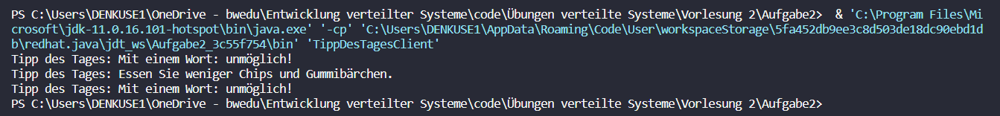

Vorlesung 2 – Sitzung vom 17.04.2023
In der zweiten Vorlesung haben wir das Konzept der Serialisierung besprochen, welches uns ermöglicht, Daten aus Java so zu speichern, dass sie auch von anderen Programmen gelesen werden können. Mit anderen Worten, wir haben gelernt, wie man einen String in eine Textdatei schreibt.
Dazu wird ein so genannter Filewriter genutzt:
//Filewriter wird erstellt und Textdatei kreiert oder darauf zugegriffen
FileWriter writer = new FileWriter("test.txt");
//Mit der Funktion write() kann ein String in die Datei geschrieben werden
writer.write("Der Text der gespeichert werden soll")
Um auf Dateien zuzugreifen, verwenden wir in Java die File-Klasse. Durch Erstellung eines File-Objekts können wir beispielsweise auf eine Datei oder einen Pfad zugreifen oder auch ein neues Verzeichnis erstellen.
Um das Schreiben in eine Datei effizienter zu gestalten, wird die Verwendung eines Buffered Writers empfohlen. Dieser arbeitet effizient, indem er zusammen mit einem FileWriter verwendet wird. Der Buffered Writer sammelt die zu schreibenden Daten, bis der Buffer voll ist, und schreibt sie dann als Block in die Datei.
BufferedWriter writer = new BufferedWriter(new FileWriter("test.txt"));
Das Lesen von Dateien in Java kann auf ähnliche Weise wie das Schreiben erfolgen, indem man FileReader und BufferedReader verwendet. Der Text wird zeilenweise durch eine while-Schleife eingelesen:
while((zeile = reader.readLine()) != null) {
writer.write(zeile);
}
In einer Übung haben wir eine Textdatei mit Java "kopiert". Zunächst haben wir mithilfe von BufferedReader und FileReader den Text aus einer .txt-Datei eingelesen. Anschließend haben wir mithilfe von BufferedWriter und FileWriter eine neue Datei erstellt und den eingelesenen Text in diese geschrieben. Durch die Verwendung des Buffers wurden Zeilenumbrüche und andere Formatierungen im Text erkannt, so dass der Text genau wie im Original in der neuen Datei erschien.
Netzwerkprogrammierung mit Sockets
Wir haben uns mit der Kommunikation zwischen Java und einer Textdatei beschäftigt und nun geht es einen Schritt weiter. Statt zwischen Java-Programm und Datei können Daten auch zwischen Client und Server über ein Netzwerk ausgetauscht werden.
Es ist wichtig zu beachten, dass der Client stets den Server kennen muss und umgekehrt muss der Server alle verbundenen Clients kennen.
Um nun eine Verbindung herzustellen und Nachrichten auszutauschen müssen drei Schritte passieren:
- Verbindung zwischen Server und Client herstellen
- Nachrichten an Server senden
- Nachrichten vom Server empfangen
Für eine Verbindung zwischen zwei Maschinen werden sogenannte Sockets verwendet. Dieses Objekt repräsentiert eine Netzwerkverbindung zwischen zwei Geräten. In Java wird dazu die IP-Adresse und die TCP-Portnummer benötigt:
//Erstellung eines Sockets mit der IP-Adresse und Portnummer
Socket sock = newSocket("192.168.3.113", 4000);
Bestimmte Dienste wie HTTP oder FTP haben bereits reservierte TCP-Portnummern, daher sollten diese bei der Portwahl vermieden werden. Für Ports im Bereich zwischen 1024 und 65535, die in der Regel frei wählbar sind, ist es dennoch empfehlenswert, die Verfügbarkeit mit dem Systemadministrator abzustimmen, um Konflikte mit anderen Anwendungen zu vermeiden.
Um auf den Datenstrom des Sockets zuzugreifen, kann ein InputStreamReader verwendet werden, der mit dem Socket verbunden wird. Anschließend kann dieser Reader mit einem BufferedReader verknüpft werden, um den Datenstrom effizienter zu verarbeiten.
InputStreamReader streamReader = new InputStreamReader(s.getInputStream());
BufferedReader reader = new BufferedReader(streamReader);
Als Gegenstück zum InputStreamReader gibt es den PrintWriter, der in der Lage ist, Daten in einen Socket zu schreiben. Der PrintWriter ist ebenfalls mit dem Socket verbunden und kann über diesen Nachrichten versenden.
PrintWriter writer = new PrintWriter(sock.getOutputStream());
writer.println("Test Text");
Ich war erstaunt darüber, wie einfach es ist, eine Netzwerkkommunikation aufzubauen. Im Anschluss daran haben wir eine vertiefende Übung durchgeführt, bei der wir einen Server und einen Client programmiert haben, um Tipps des Tages auszutauschen.
Die Tipps sind dabei als String auf dem Server gespeichert und werden vom Client empfangen und in der Konsole ausgegeben.